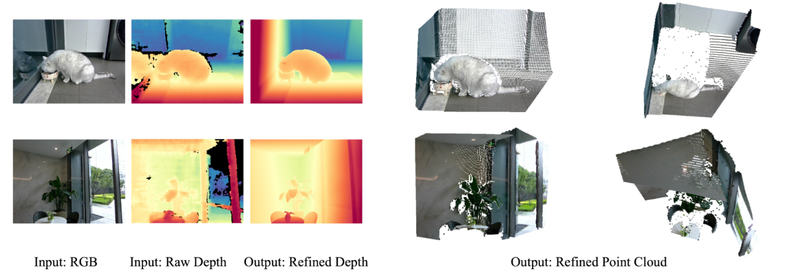
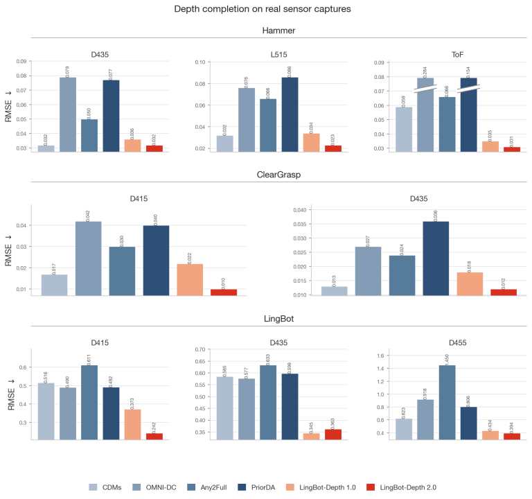
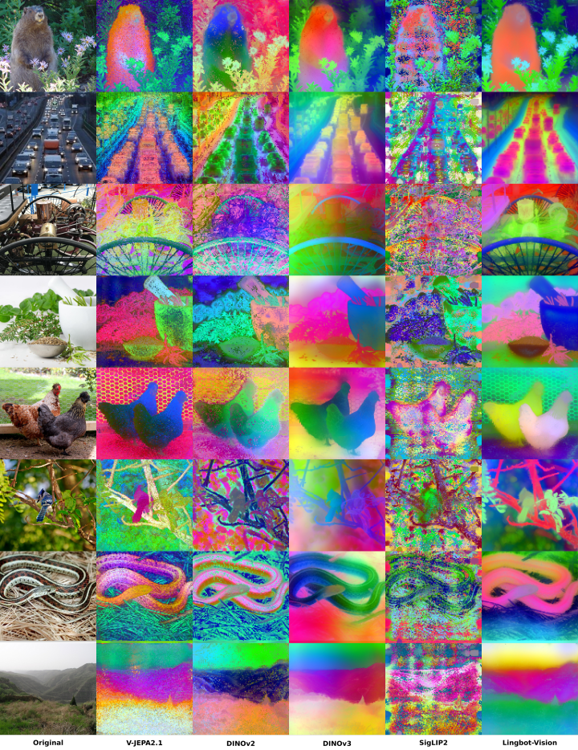
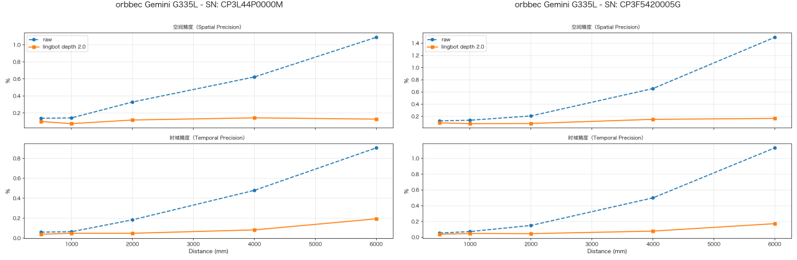

Ant LingBot Debuts LingBot-Depth 2.0: A Spatial Perception Model Trained on 150 Million Samples, Achieving Sharper Vision and Greater Precision
On July 7, LingBot Technology, the embodied-intelligence subsidiary of Ant Group, unveiled LingBot-Depth 2.0. The model, trained on a 150-million-sample dataset, delivers across-the-board improvements in edge sharpness, fine-object detection, long-distance depth estimation, and robustness under complex visual conditions.
LingBot-Depth is LingBot's proprietary spatial perception model, effectively functioning as a robot's visual system in the physical world. Version 1.0 addressed spatial-perception challenges in difficult scenarios, including transparent and reflective surfaces.
Relative to LingBot-Depth 1.0, LingBot-Depth 2.0 scales training data from 3 million to 150 million samples, yielding comprehensive performance gains: 12 first-place finishes across 16 depth-completion benchmarks; depth error reduced by half in the most difficult indoor scenarios with large depth voids (RMSE declining from 0.132 to 0.062); and notably superior results on glass, mirrors, and transparent objects — conditions where conventional depth cameras routinely fail.
Alongside the depth model, LingBot launched LingBot-Vision, the visual backbone for LingBot-Depth 2.0. This establishes an end-to-end pipeline that moves robots from 'comprehending' to 'precisely perceiving,' targeting core bottlenecks in spatial awareness, fine-grained recognition, and adaptation to complex environments.

Figure 1: LingBot-Depth 2.0 reconstructs full, planar 3D geometry in challenging scenarios including mirrored and glass surfaces.
LingBot-Depth 2.0's breakthrough is underpinned by LingBot-Vision's superior visual representation. As a general-purpose vision model, LingBot-Vision is the industry's first visual foundation model to adopt 'boundary structure' as a pre-training objective — a paradigm shift in spatial perception training. It achieves sub-pixel-level boundary localization and spatial understanding, delivering spatial perception with higher precision and greater stability.
LingBot-Vision's pre-training corpus comprises just 160 million images — an order of magnitude smaller than DINOv3 — yet it surpasses DINOv3 in depth estimation accuracy. Its boundary detection is sufficiently robust to track object edges across continuous video frames. Four versions have been open-sourced: ViT-G/L/B/S.
Beyond powering LingBot-Depth 2.0, LingBot-Vision is reported to offer general-purpose capabilities — a single model architecture serving diverse downstream tasks.

Figure 2: LingBot-Depth 2.0 achieves leading performance in real-sensor depth-completion evaluations.

Figure 3: Relative to mainstream visual foundation models, LingBot-Vision delivers clearer and more stable identification of object boundaries and spatial structures.
LingBot-Depth 2.0 has earned professional certification from Orbbec's Depth Vision Lab. Field tests leveraging chip-level raw 3D data from Orbbec's Gemini 330 series stereo cameras demonstrate marked gains in edge sharpness, contour integrity, fine-object detection, long-distance depth estimation, and robustness across diverse lighting and material conditions.

Figure 4: LingBot-Depth 2.0 received professional validation from Orbbec's Depth Vision Lab, exhibiting exceptional precision and stability in both spatial and temporal depth-estimation tasks across multiple sensor variants.
Commercially, Ant LingBot has established extensive collaboration with Orbbec across multiple domains.
Orbbec's newly released data-acquisition product line — designed without requiring a physical robot body — will integrate an RGB-D version of the EGO device that runs a LingBot-Depth variant optimized for capture scenarios. Higher-tier commercial model versions are expected to follow, continuously addressing depth voids, refining edge geometry, and improving spatial detail — delivering a more precise, stable, and production-ready real-world data foundation for embodied-AI model training.
Orbbec will also release an SDK embedding the latest LingBot-Depth capabilities for on-device deployment, allowing robots equipped with Gemini 330-series cameras to realize superior depth performance. An integrated camera product bundling the commercial LingBot-Depth model is planned for year-end, delivering a unified '3D camera + spatial perception' package. The two-model release is expected to broaden the partnership into additional domains.
Technical reports for both models and LingBot-Vision's weights have been open-sourced. Ant LingBot Technology said it aims to co-build the industry's robot vision foundation through an open approach, enabling robots to overcome the persistent bottlenecks of 'perceiving, perceiving precisely, and perceiving reliably' in physical environments — thereby accelerating commercial-scale embodied-AI adoption.